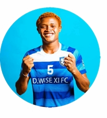

Augustine Sosu is a disciplined and intelligent midfielder who excels in controlling the center of the pitch. Known for his strong defensive awareness, ability to read the game, and calm distribution under pressure, he plays a key role in breaking up opposition attacks and transitioning play from defense to attack.
A reliable team player with leadership qualities, Augustine combines physical presence with tactical intelligence, making him an effective anchor and box-to-box contributor in midfield.

← Go Back